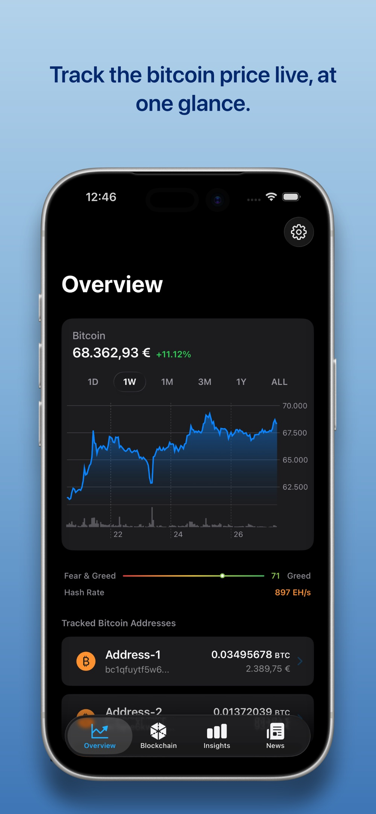
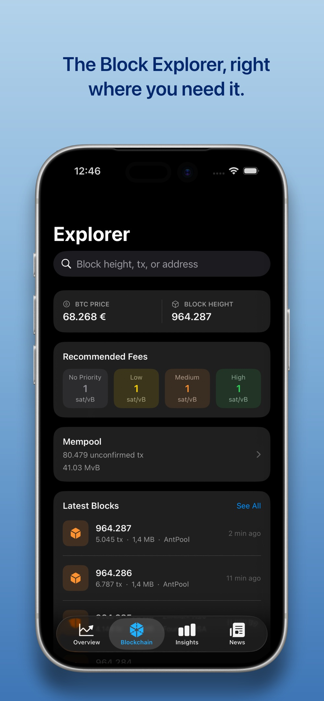
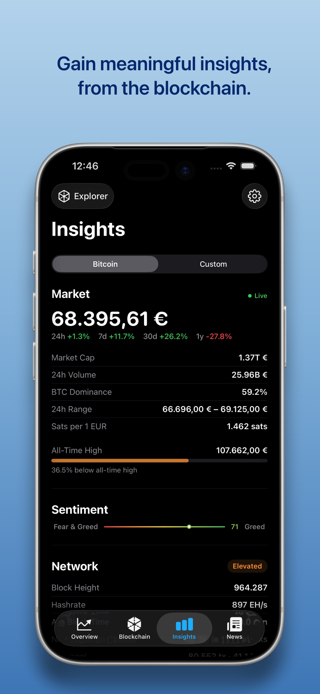
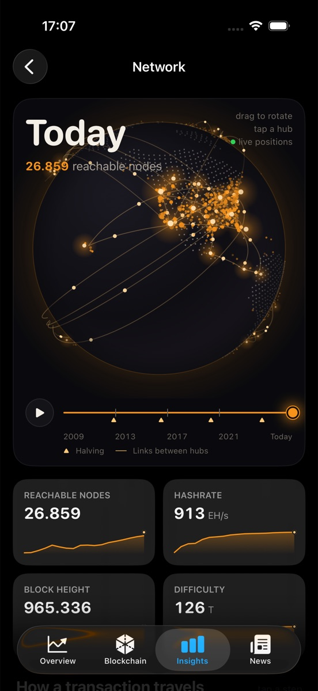

Ein Bitcoin-Portfolio-Tracker, der nur liest. Öffentliche Wallet-Adressen mit Label anlegen, Guthaben und Transaktionen direkt aus dem Netzwerk laden, Wertentwicklung über 1 Tag bis Max verfolgen. Keine Private Keys, keine Seed Phrase, kein Zugriff auf die Coins.
Die vier Tabs, wie sie im App Store gezeigt werden.



Der Design-Entwurf der Netzwerk-Seite als HTML: Globus ziehen, Zeitslider von 2009 bis heute schieben, Zeitraffer starten, Lernblöcke antippen.
Entwurf Canvas-Globus ohne Bibliotheken · Zahlen illustrativ · In eigenem Tab öffnen
Entwurf Kerzenchart mit Zeichenwerkzeugen · Kursdaten synthetisch · In eigenem Tab öffnen
Vier Tabs: Overview zeigt das Gesamtportfolio mit Wertentwicklung, Blockchain die Adressen und ihre Transaktionen, Insights Kennzahlen, Netzwerk und Chart-Analyse, News aktuelle Meldungen.
Neueste Neuerung ist die Netzwerk-Seite: ein drehbarer Globus, auf dem erreichbare Nodes als leuchtende Punkte stehen und Bögen die Verbindungen zwischen Clustern zeigen. Der Zeitslider läuft von 2009 bis heute, Nodes und Bögen erscheinen im Jahr ihres Entstehens, Halvings sind auf der Zeitachse markiert. Darunter: Kennzahlen mit Sparklines, der Weg einer Transaktion, Nodes nach Land, die Schichten des Netzes, der Mempool, die Angebotskurve und ein Glossar.
Auf dem iPhone kommen die Node-Positionen live aus dem Bitnodes-Export, reduziert auf Geo-Bins, eine Stunde gecacht. Der Globus wird in einer Canvas innerhalb einer TimelineView gezeichnet, ohne 3D-Bibliothek.

Nur öffentliche Adressen. Die App kann nichts senden und nichts verlieren.
Portfolio über 1D, 1W, 1M, 1Y und Max, Kurs live per WebSocket, FIFO-Berechnung auf Android.
Nodes, Bögen, Zeitslider mit Zeitraffer, Tipp auf einen Hub zeigt Details.
Erreichbare Nodes, Hashrate, Blockhöhe, Difficulty, jeweils mit Verlauf.
Transaktionsweg, Schichten des Netzes, Mempool, Halvings und Angebotskurve, Glossar.
Kerzenchart mit Trendlinien, Fibonacci, Kanälen und Indikatoren, Zeichnungen in benannten Gruppen. Als Entwurf fertig.
Die App folgt dem System, die Globus-Karte bleibt bewusst immer dunkel.
iOS in SwiftUI mit SwiftData und Swift Charts, Android in Kotlin mit Jetpack Compose und Room.
Support-Seite erkennt die Browsersprache, Englisch als Standard, Deutsch automatisch.